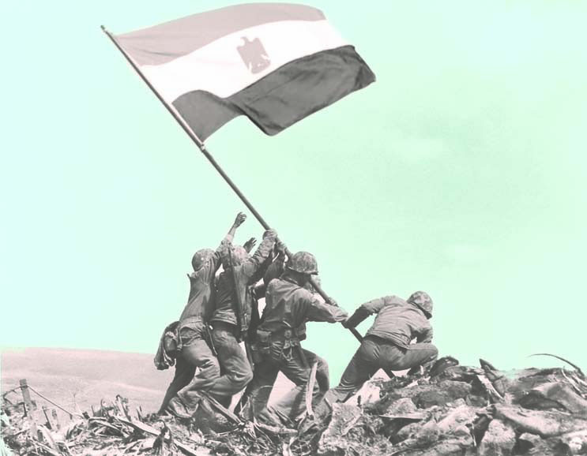

عزيزي القارئ هذه المعلومات من مصادر موثوفة وأخذناها من كتاب مذكرات لحرب اكتوبر لسعد الدين الشاذلي ننصحكم بعدم زيارة أي موقع إلا بالتحقق من مصدر المعلومات اللتي قدمها
"مذكرات لحرب أكتوبر" هو كتاب يتناول أحداث حرب أكتوبر 1973 بين مصر وإسرائيل. يُعد الكتاب مصدرًا تاريخيًا هامًا حيث يقدم نظرة خاصة من وجهة نظر الكتّاب والشخصيات المشاركة في الحرب. يستعرض الكتاب الاستعدادات والتحضيرات للحرب، والأحداث العسكرية الهامة، والتأثير السياسي والاقتصادي للحرب على المنطقة. يعتبر الكتاب مصدرًا قيمًا لفهم السياق التاريخي والتطورات السياسية في تلك الفترة الزمنية.
الاطراف : مصر و سوريا بدعم من معظم الدول العربية ضد اسرائيل والتي كانت تدعمها الولايات المتحدة الأمريكية
خمسون عامًا مرت على انتصار الجيش المصرى فى حرب أكتوبر 1973 ضد إسرائيل، التى احتلت أرض سيناء لمدة 6 أعوام كاملة منذ نكسة يونيو 1967. هى حرب العزة والكرامة التى استعادت فيها مصر أرضها وانتصرت على إسرائيل وقضت على أسطورة الجيش الذى لا يُقهر. على الرغم من مرور نصف قرن على هذه الحرب، إلا أن ذكراها العطرة ستبقى عيدًا لكل المصريين؛ تخليدًا لقوة إرادتهم وصلابتهم، ولكفاءة قواتهم المسلحة وقدرتها القتالية المتميزة والتى سطرت ملحمةً وطنيةً خالدة فى حفظ تراب هذا الوطن. كما ستظل هذه الحرب تذكرنا دوما بيوم رفع فيه المصريون رءوسهم أمام العالم فى واحدة من أقوى وأشرس الحروب التى خاضتها مصر ضد العدو الإسرائيلى لاسترداد أرض سيناء المسلوبة. • • • تعد حرب أكتوبر أكبر حرب بعد الحرب العالمية الثانية، فقد قلبت موازين القوى وكيفية إدارة معارك الأسلحة المشتركة، وهى إحدى جولات الصراع العربى الإسرائيلى، حيث خططت القيادتان المصرية والسورية لمهاجمة الدولة العبرية على جبهتين فى وقت واحد بهدف استعادة شبه جزيرة سيناء والجولان التى احتلتهما فى 1967. لقد غيرت حرب أكتوبر الكثير من العقائد والنظريات لدى العسكريين، وخبراء الاستراتيجية القومية فى العالم، ودفعت الخبراء والمتخصصين شرقا وغربا إلى إعادة حساباتهم على الأسس التى رسختها هذه الحرب، سواء فيما يتعلق بفن القتال واستخدام السلاح، أو فيما يختص بتكنولوجيا التسليح وتصميم الأسلحة والمعدات. وعلى المستوى الاستراتيجى، فقد استطاعت الحرب أن تحطم نظرية الأمن الإسرائيلى وأن تهدر نظرية الحرب الوقائية. وعلى المستوى التعبوى والتكتيكى، فقد تغلبت القوات المسلحة المصرية على أعقد مانع مائى وهو خط بارليف، وعبرت قناة السويس وسط لهيب النيران، ودمرت أقوى الدفاعات والتحصينات، ودارت معارك عنيفة اشتركت فيها قوات بحجم ونوع لم يسبق حدوثه فى المنطقة. وما زالت العبقرية المصرية فى هذه الحرب تُدرس حتى الآن فى الأكاديميات العسكرية العالمية كأحد النماذج فى العبقرية العسكرية، لذلك حفرت هذه الحرب مكانة بارزة فى ذاكرة التاريخ العسكرى. • • • لم تكن حرب أكتوبر مجرد معركة كرامة استطاعت فيها مصر أن تحقق انتصارا عسكريا على إسرائيل، بل كانت اختبارا حاسما لقدرة الشعب على تخطى كابوس مزعج يؤرق كل المصريين، ومهدت لتحرير واسترداد باقى أراضى الوطن التى سلبها العدو الإسرائيلى. إن مسئولية تحرير الأرض والمواجهة كانت تقع أكبر أجزاءها على القوات المسلحة التى استطاعت أن تثبت أمام العالم كله أنها على قدر المسئولية، حيث حققت انتصارا عسكريا غير مسبوق فى التاريخ، فيما كانت المسئولية الأخرى على البطل الحقيقى وهو الشعب المصرى عندما دفع بأبنائه للقتال وتقديم أرواحهم فداء لتراب الوطن، فلم يخل منزل فى مصر من وجود مصاب أو شهيد. • • • لقد كان نصر أكتوبر العظيم درسا وطنيا خالدا أثبت أن الأمة المصرية قادرة دومًا على استعادة حقوقها، وفرض احترامها على الآخرين، وأن الحق الذى يستند إلى قوة تعلو كلمته لابد أن ينتصر، وأن الشعب المصرى لا يفرط فى أرضه وقادر على حمايتها فى كل وقت وحين. فتحيةً إلى جيل أكتوبر العظيم الذى حقق النصر، وأعاد للعسكرية المصرية الكبرياء والشموخ، وتحية إلى كل أم مصرية غرست فى أبنائها عقيدة راسخة وهى أن الأرض لا يمكن التنازل عنها مهما كان الثمن، وربطت على قلبها صبرا وإيمانا، وتحية إلى أرواح شهدائنا الأبرار الذين رووا بدمائهم الزكية أرض مصر الطاهرة، وقدموا لأجيال تأتى من بعدهم القدوة والمثل فى التضحية والفداء. والتحية واجبة أيضا إلى رجال القوات المسلحة المصرية الذين يرابطون فى كل بقعة من أرض مصر ليحفظوا لها أمنها وأمانها واستقرارها، ويشيدون مستقبلا باهرا لأبنائها. • • • إن أساس نصر أكتوبر هو الكفاح من أجل تغيير الواقع من الهزيمة إلى النصر ومن الانكسار والمرارة إلى الكبرياء والعزة والفخر، ولا بد من استدعاء روح نصر أكتوبر واستلهام عزيمة وإصرار الجندى المصرى فى هذه الحرب وجعلها خارطة تاريخ للمستقبل لبناء مصر الحديثة والعبور إلى الجمهورية الجديدة واستكمال مسيرة البناء والتنمية الشاملة. كما أن عبور قناة السويس، وتحطيم خط برليف كان دربا من الخيال ومعجزة بكل معنى الكلمة فى الماضى، فليكن تغيير وجه مصر الحضارى والتنموى والصناعى والزراعى والعسكرى هو العبور والانتصار الثانى الذى يتحقق على أرض الواقع، وهو ما يجعل الشعب المصرى يفخر من جديد بتحقيقه لمعجزة تنموية شاملة، لا تقل بأى حال من الأحوال عن معجزة نصر أكتوبر.